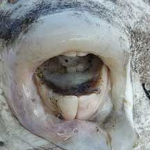
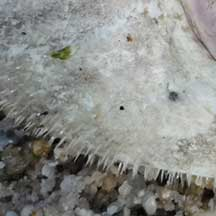
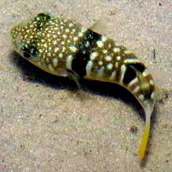
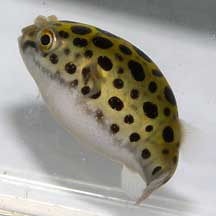
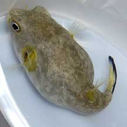
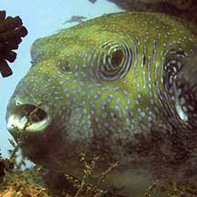
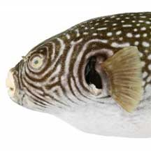

|
|
| fishes text index | photo index |
| Phylum Chordata > Subphylum Vertebrata > fishes |
| Pufferfishes Family Tetraodontidae updated Nov 2020
Where seen? These rotund fishes are sometimes seen on some of our shores. They are found among seagrasses, near coral rubble as well as in mangroves. Sometimes seen in fish traps, and also washed ashore during mass fish death incidents. Divers also encounter on some of our reefs, including very large ones! What are pufferfishes? Pufferfishes belong to the Family Tetraodontidae. According to FishBase: the family has 19 genera and 121 species. They are found in tropical and subtropical ares of the Atlantic, Indian and Pacific oceans. Other similar fishes belong to different families: boxfishes and cowfishes to Family Ostraciidae, and porcupinefishes to Family Diodontidae. Features: 10-30cm. Pufferfishes are slow moving fish that are hardly designed for fast swimming. When relaxed, they are generally elongated bulbous fishes. Pufferfishes get their common name from their ability to inflate the body greatly by swallowing water (or air, if it is out of water). They do this when they are stressed. Fully inflated, they resemble balloons. This probably helps make a pufferfish more difficult to swallow and thus deters predators. They are sometimes also called blowfishes. Please don't tease pufferfishes or force them to inflate themselves. It is cruel to do so. Poisonous puffers: Many pufferfishes are highly poisonous to eat. The pufferfish harbours tetraodotoxin. This potent toxin may be concentrated in the intestines, reproductive organs or skin. Even dead fishes can poison anything that eat them. The tough skin lacks scales. Most species are covered with with tiny spines, some have fleshy filaments. In most, the underside of the body is white while the upper side may have various patterns. The gill opening does not have a cover and are simple slits in front of the pectoral fins. They lack pelvic fins. |
 And inflated fish that was dead/dying and washed ashore. St. John's Island, Dec 16 Photo shared by Rene Ong on facebook. |
 Fused teeth, on a dead pufferfish. Changi, Nov 08 Photo shared by Ivan Kwan on flickr. |
 Fine prickly skin, on a dead pufferfish. Changi, Nov 08 Photo shared by Ivan Kwan on flickr. |
| What do they eat? Some species
appear to eat whatever they can find. Others may specialise in eating
algae or invertebrates. Some may scavenge. The mouth is small and
teeth fused into a beak made up of four fused powerful teeth. The
scientific name comes from the Greek 'tetra' which means 'four'
and 'odous' which means 'teeth'. Puffer babies: Pufferfishes lay eggs in a nest and it is presumed that the nest is defended. Human uses: Despite their toxic nature, pufferfishes are eaten in Japan as a delicacy. Status and threats: Our pufferfishes are not listed as among the threatened animals of Singapore. However, like other creatures of the intertidal zone, they are affected by human activities such as reclamation and pollution. Over-collection can also have an impact on local populations. |
| Some Pufferfishes on Singapore shores |
 Milk-spotted pufferfish |
 Spotted green pufferfish |
 Yelloweye pufferfish |
 Blue-spotted pufferfish |
 Starry pufferfish |
|
| Fine blue lines circle the eye. | Dense black spots around the eye. |
 Reticulated pufferfish |
 Map pufferfish |
|
| Brown and whitish lines circle the eye. | Pale and dark streaks radiating from the eye. |
| Family
Tetraodontidae recorded for Singapore from Wee Y.C. and Peter K. L. Ng. 1994. A First Look at Biodiversity in Singapore. *from Lim, Kelvin K. P. & Jeffrey K. Y. Low, 1998. A Guide to the Common Marine Fishes of Singapore. **from WORMS
|
Links
References
|